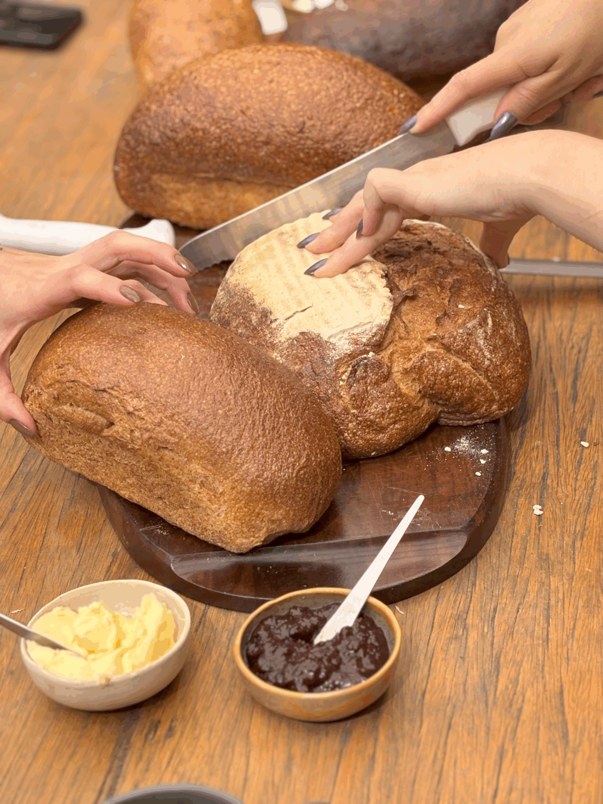

Curso de Pão para Iniciantes
Sábado, das 8h às 13h · Um curso prático, sensorial e cheio de afeto, feito pra quem quer aprender do começo. Aqui, você põe a mão na massa, entende cada etapa e sai com muito mais do que receita.

O que você vai viver
- Vai preparar dois pães com as próprias mãos
- Vai conhecer dois tipos de fermento: o biológico e o natural (nosso Fermento de Cristo)
- Vai entender as diferenças e decidir o que faz mais sentido pra você
- Vai levar os pães pra assar em casa, com a sua assinatura
O que está incluso
- Apostila impressa com teoria e receitas
- Grande café da manhã com nossos pães artesanais
- Degustação de brusquetas (5 sabores, mais perto do meio-dia)
- 1 fermentômetro pra usar em casa
- 1 forma especial de alumínio
- Isca do nosso fermento natural
- Todos os ingredientes e materiais pra fazer os pães
Onde é?
No nosso ateliê, dentro de casa — o mesmo espaço onde nascem os pães da Pão de Verdade. Um ambiente de cerâmica, madeira, forno e calma.
📍 Santa Mônica – Uberlândia
Pra quem é
Pra quem nunca fez pão. Pra quem já tentou e travou. Pra quem quer viver um sábado diferente, aprendendo algo real e prazeroso.
R$275 por pessoa
Você pode pagar via Pix ou parcelar no cartão (até 12x).
Garantir minha vaga — R$275 💬 Falar no WhatsAppTurmas pequenas, vagas limitadas. Confirmação via WhatsApp após o pagamento.
Leve para casa muito mais que receita
Dois pães com a sua assinatura, um fermento vivo pra cuidar e a confiança de quem entendeu cada etapa.
Quero participar